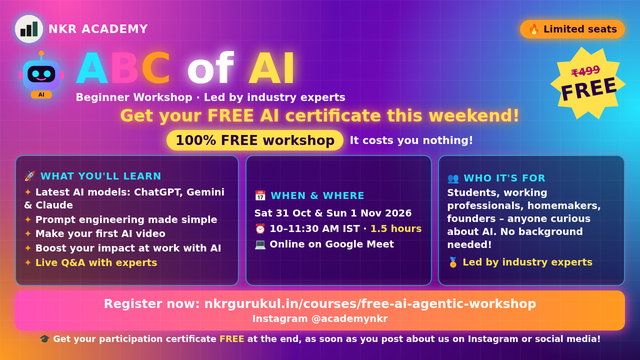

今日舉行
AI 入門 ABC：初學者免費工作坊（今日場）
ABC of AI – Free Beginner Workshop (No Background Needed)
90 分鐘免費線上初學者工作坊：用淺白語言介紹 ChatGPT、Gemini、Claude 等最新模型，講解提示詞基礎，即場示範做出第一條 AI 影片，並討論如何務實學習 AI 以提升工作成效。無需編程或技術背景。
同一頁亦列出已過的 Saturday 14 Nov 場，今日請選 Sunday 15 Nov。證書須出席直播並在社交平台分享參與紀錄（須標註 NKR Academy），與本場免費旁聽分開。完場或會介紹主辦其他課程。
官方連結 →